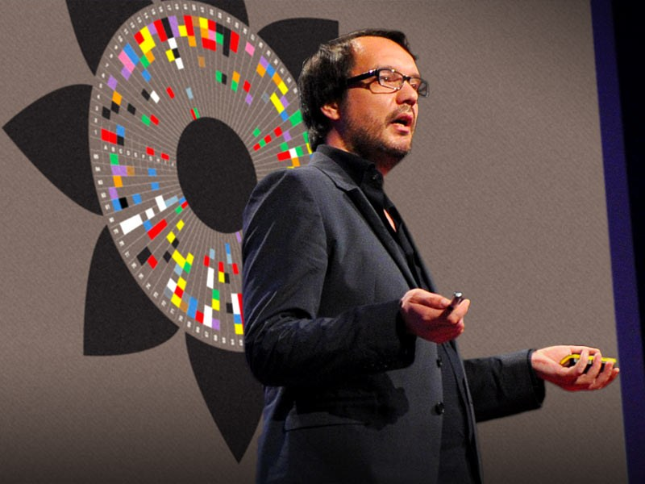

DATA VISUALIZATIONS
Importance and Influencers

Why is data visualization important?
The concept of using pictures to understand data has been around for centuries, from maps and graphs in the 17th century to the invention of the pie chart in the early 1800s. Several decades later, one of the most cited examples of statistical graphics occurred when Charles Minard mapped Napoleon’s invasion of Russia. The map depicted the size of the army as well as the path of Napoleon’s retreat from Moscow – and tied that information to temperature and time scales for a more in-depth understanding of the event.
It’s technology, however, that truly lit the fire under data visualization. Computers made it possible to process large amounts of data at lightning-fast speeds. Today, data visualization has become a rapidly evolving blend of science and art that is certain to change the corporate landscape over the next few years.
Because of the way the human brain processes information, using charts or graphs to visualize large amounts of complex data is easier than poring over spreadsheets or reports. Data visualization is a quick, easy way to convey concepts in a universal manner – and you can experiment with different scenarios by making slight adjustments.
Data visualization can also identify areas that need attention or improvement, clarify which factors influence customer behavior, help you understand which products to place where, and predict sales volumes.
5 People Who Are Revolutionizing the Data Viz Movement
Aaron Koblin is a digital media artist and visual storyteller working at the intersection of science, art and mathematics.
As a Creative Director of the Data Arts team in Google’s Creative Lab, he is best known for his stunning data visualizations generated from streams of information: SMS messages that create a digital skyline of Amsterdam, tiny particles that form portraits of Radiohead band members, or flight patterns that highlight a glowing map of the U.S.
Koblin has collaborated with filmmakers, data scientists, sculpture artists, programmers and musicians on countless data visualization projects. His artwork is now part of the MoMA’s permanent collection.
Ben Fry's comparison of salary vs. performance of sports teams.
Every data artist knows the name Ben Fry. Fry is the co-founder of Processing, an open source programming language built for visual design communities. He says he developed Processing with the intent of getting people hooked on coding in a visual context. Processing is now the go-to language for all the serious data visualizations built today.
Fry, who studied computational information design at the MIT Media Lab, now runs an information design agency that produces mind-boggling visualizations of everything from global population trends to dietary preferences in Saudi Arabia.
Jer Thorp's visual analysis tool provides a detailed picture of how information moves through the social media space.
You’ve probably seen the stunning software-based art created by Jer Thorp. As the current Data Artist in Residence at the New York Times, his work focuses on adding narrative to huge amounts of data in order to help people take control of information. He is also the co-founder of the Office for Creative Research, a multi-disciplinary research group that explores new modes of engagement with data.
In his TED talk and interviews, Thorp says his ultimate goal is to explore the human side of data. “Design has a really interesting role of bridging that gap and making data more human,” he says. “In my work I’m really thinking about how we can give people glimpses into that type of future.”
Jonathan Harris' project We Feel Fine automatically harvests human feelings from the web and displays these emotional trends in a beautiful interface.
As an artist, storyteller and Internet anthropologist, Jonathan Harris makes projects that “straddle scales of existence—from the planetary to the personal.” His work explores humans on a global scale by looking at the artifacts they leave behind on the web.
In his TED talk, Harris says that he is interested in building tools that allow large numbers of people to tell their stories. His work, which includes projects as diverse as a visual representation of human emotion online, a portrait of mythologies based on global media coverage and an experimental photo essay of a whale hunt, have been praised for their innovative use of unfiltered content.
David McCandless
The MoMA featured David McCandless' visual hierarchy of digital distractions in an exhibition of communication design.
David McCandless is a British data journalist who transforms complex data sets into sleek, simple diagrams that identify unseen patterns and connections.
McCandless suggests that good design is the best way to deal with the information glut we encounter on the web. “If you’re navigating a dense information jungle,” he says, “coming across a beautiful graphic or a lovely data visualization, it’s a relief, it’s like coming across a clearing in the jungle.”
His interest in the intersection between data visualization and journalism led to his founding the blog Information is Beautiful, a blog in which McCandless talks about the best and the worst data-driven journalism.